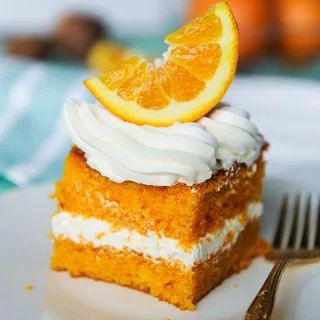

Orange Creamsicle Cake

description
a quick, easy to make and delicious orange Cake
Ingredients
- 10 oz (284 g) cake flour
- 10 oz (284 g) granluted sugar
- 1/2 tsp (1/2 tsp ) salt
- 1 1/2 tsp (1 1/2 tsp) baking powder
- 1 tsp (1 tsp) baking soda
- 1/4 tsp (1/4 tsp) citric acid (optional)
- 6 oz (170 g) unsalted butter room temperature
- 7 oz (198 g) orange juice concentrate defrosted at room temperature
- 4 oz (113 g) milk room temperature
- 4 large (4 large ) eggs
- 2 tsp (2 tsp) orange extract
- zest 1 (zest 1) orange
- 2 oz (57 g) vegetable oil
- 1-2 drops (1-2 drops) yellow food coloring
- 1 drop (1 drop) orange food coloring
- 24 oz (680 g) White chocolate
- 8 oz (227 g) heavy whipping cream
Steps
- Make sure all your ingredients are at room temperature (milk, eggs, orange juice, butter). Preheat your oven to
335℉
- In the bowl of your stand mixer, combine together your flour, sugar, salt, baking powder and baking soda. Whisk
and set aside.
- In a separate container, combine your milk, orange juice, oil and eggs, extracts and zest. Whisk to combine.
- Add your room temperature butter to your flour mixture and attach your paddle attachment. Mix on low until
mixture resembles coarse sand.
- Add in 1/3 of your wet ingredients mixture. Turn your machine up to medium and mix for one full minute. Mixture
will look lighter in color and appear fluffier. Don't skimp on the time or the structure of your cake will not
develop and it will collapse. Scrap your bowl with a spatula to make sure your batter is fully mixing at the
bottom.
- Add in your drops of food color, your citric acid then add in 1/2 of your remaining liquid. Let incorporate on
low and then add in the rest of the liquid. Mix until just combined.
- Pour batter into prepared pans (I like to use cake goop) and bake for 30-40 minutes until a toothpick comes out
cleanly. Wrap and chill cakes in plastic wrap before torting and filling.
- Microwave chocolate in microwave safe bowl for 1 minute to soften. Bring heavy whipping cream just to a simmer
then pour over chocolate
Make sure the chocolate is fully covered
Let set for 5 minutes
Whisk gently to combine cream and chocolate, do not incorporate air
Pour into a shallow pan or dish to let stiffen up to buttercream consistency. Then stir until creamy before icing
your cake. If your ganache is too firm, microwave for 10 seconds to soften and then stir until ganache is the
desired consistency